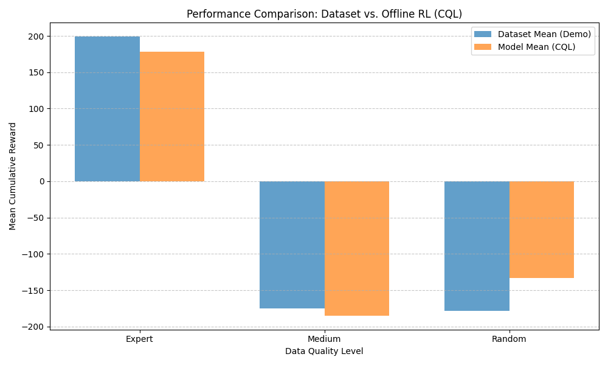

Investigating the impact of demonstration data quality on Conservative Q-Learning (CQL)
This experiment evaluates how the quality of demonstration data affects an Offline Reinforcement Learning agent using the Conservative Q-Learning (CQL) algorithm. Unlike standard Reinforcement Learning which learns by trial and error, Offline RL learns exclusively from a fixed dataset. We compared three data levels: Expert (fully trained), Medium (partially trained), and Random (untrained).
The table below compares the average reward of the training dataset versus the performance of the agent trained on that data.
| Data Quality | Dataset Mean Reward | CQL Model Mean Reward | Success Rate (%) | Crash Rate (%) |
|---|---|---|---|---|
| Expert | 198.95 | 203.93 | 74.0% | 0.0% |
| Medium | -175.36 | -181.63 | 0.0% | 86.0% |
| Random | -178.19 | -135.40 | 0.0% | 98.0% |

Visual behavior of the trained agents in the LunarLander-v3 environment.
Smooth, controlled descent and precise landing.
Understands descent but lacks fine control for landing.
Demonstrates basic engine firing but ultimately crashes.
The results demonstrate that while Expert Data yields the best results, CQL is capable of extracting meaningful signals even from Random Data, improving the mean reward significantly over the training trajectories (-135 vs -178). However, for complex tasks like landing, the "stitching" capability of CQL requires higher density or higher quality transitions to achieve a 100% success rate.